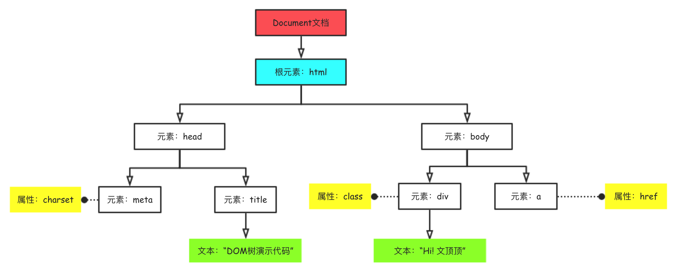
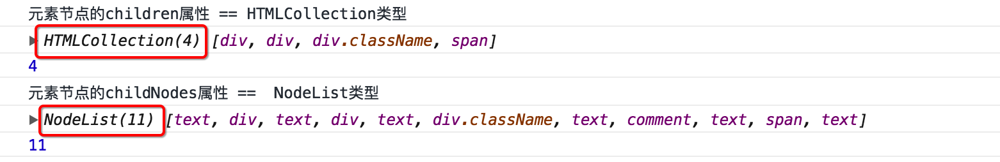
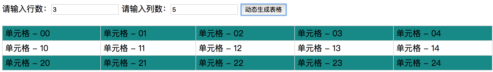

本文将详细介绍DOM相关的知识点，包括但不限于Document文档结构、Node节点、Node节点的类型、Node节点的关系以及DOM的基本操作( `节点的获取`、`节点的创建`、`节点的插入`、`节点的克隆`和`删除`等 )等内容，在文章的最后还以附录的形式列出了DOM相关的所有属性和方法，需要指出的是本文不包含任何浏览器历史、内核以及页面渲染的内容，如有需要请参考 [ 浏览器、内核和引擎 ](http://wendingding.com/2018/06/05/%E7%BD%91%E7%BB%9C%E7%BC%96%E7%A8%8B%E7%B3%BB%E5%88%97%20%E6%B5%8F%E8%A7%88%E5%99%A8%E3%80%81HTML%E5%92%8C%E5%86%85%E6%A0%B8(%E5%BC%95%E6%93%8E)和[ HTML页面渲染的基本过程 ](http://wendingding.com/2018/06/11/%E7%BD%91%E7%BB%9C%E7%BC%96%E7%A8%8B%E7%B3%BB%E5%88%97%20HTML%E9%A1%B5%E9%9D%A2%E6%B8%B2%E6%9F%93%E7%9A%84%E5%9F%BA%E6%9C%AC%E8%BF%87%E7%A8%8B/)这两篇文章。
1.0 关于DOM 简单介绍
DOM（全称为Document Object Model）即**文档对象模型**，是用于表示和操作HTML或XML文档内容的一套基础API( Application Programming Interface)。 DOM把整个页面映射为一个多层节点结构，HTML 或 XML页面中的每个组成部分都是某种类型的节点，这些节点又包含着不同类型的数据。当网页被加载时，浏览器会内部的引擎会根据DOM模型，将结构化文档（比如HTML和XML）解析成一系列的节点，再由这些节点构建出一种树状结构（DOM Tree）。
✧ 有时候我们可能会看到DHTML这个专业术语：DHTML是动画HTML的简称 ，其并不是一项新的技术，而是描述HTML CSS JavaScript技术组合的术语。它曾被认为是HTML/XHTML CSS和JavaScript相结合的产物，像今天的HTML5，但真正凝聚它们的是DOM。
下面给出一段简单的HTML示例代码和对应的DOM树结构图。图示中的的方框代表着文档中的一个个节点，每个方框（节点）暨一个Node对象，所有这些节点组成了DOM树。
1 2 3 4 5 6 7 8 9 10 11 <!DOCTYPE html > <html lang ="en" > <head > <meta charset ="UTF-8" > <title > DOM树演示代码</title > </head > <body > <div class ="className" > Hi! 文顶顶</div > <a href ="http://www.wendingding.com" > </a > </body > </html >

节点的类型
HTML页面中拥有众多类型的节点，不同类型的节点其表示和操作的方式有很大的差异，下面分别列出：
❏ Text：标签之间或标签包含的文本内容MDN-DocumentFragment
尽管在HTML页面中存在着如此众多类型的节点，但我们真正需要关注的主要还是：**元素节点、 属性节点和 文本节点**。在(HTML|XHTML)文档中，文本节点总是被包含在元素节点的内部，属性节点用来对元素做出更具体的描述。
1 2 3 4 在上面的图示中，我们提供了一个div标签，该标签拥有“上坡和下坡不就是同一条路吗”文本内容和两个属性节点。 ① 个div标签由开始标签和结尾标签组成，本身是Element类型的。 ② “上坡和下坡不就是同一条路吗”作为div标签的文本内容，本身是Text类型的。 ③ div标签中的class和title是属性节点(key-value)，本身是Attribute类型的。
节点关系
DOM中节点的关系主要有**子节点** 父节点后代节点(子孙节点)祖先节点兄弟节点**这几种情况，我们可以通过下面的示意图先对DOM中的节点关系有一个简单的认识。
DOM标准
从 IE4 和 Netscape Navigator4 开始，它们开始分别支持不同形式的DHTML(Dynamic HTML)为Web技术的发展带来了很大的便利，但是也因为微软和 Netscape 在DHTML的技术发展方面各持己见，导致编写的网页如果要同时运行在它们的浏览器上面需要做大量的适配工作，它们甚至互不兼容。因此，负责制定Web通信标准的 W3C(World Wide Web Consortium)开始着手规划DOM规范，DOM规范有DOM0、DOM1、DOM2和DOM3等4个级别，具体范围可以参考下图。
规范说明
目前DOM规范的0级、1级和2级基本上已经被主流浏览器全部支持，DOM3级被部分支持( IE9+已经全部支持DOM1、2、3)。此外需说明的是除DOM规范外还存在一些扩展性的规范，比如HTML5、Selectors API和Element Traversal以及SVG ( Scalable Vector Graphic)规范等，在支持(兼容)这些规范的浏览器中都可以使用它们提供的标准API。下面给出相关规范的文档地址，详情请自行查阅。
DOM1 规范 DOM 2规范 DOM 3 规范 Selectors API规范文档 HTML5 规范文档 Element Traversal 规范文档 Scalable Vector Graphic规范 ECMAScript-262/2018/6
2.0 Node && Element && nodeType Node（节点）和 Element（元素节点）是严格区分的 。也就是说Node和Element不能简单的混为一谈，因为很多人都搞不清楚它们的关系，所以这里单独拿出来讨论。
Node
**Element**元素节点，是Node节点中的一种类型。
通俗的来讲，node节点就像人一样，是一种基本的类型。（大哲学家柏拉图对人的定义是：人是两腿无毛会直立行走的动物 ：） 而人这种基本类型中，又存在着小孩、中年人、老年人、学生、教师、司机、男人、女人等种种具体的类型。
对应到这里的关系，那么Element其实是node的一种更具体的类型。不止Element，像Text、Comment以及Attribute等等这些其实都是特殊的Node，它们拥有自己的类型常量（TEXT_NODE、COMMENT_NODE以及ATTRIBUTE_NODE ）用于区分彼此。文档中所有的node节点都拥有nodeType属性，我们可以通过该属性的值来确定节点的具体类型，下面列出对应关系。
1 2 3 4 5 6 # 可以直接在开发者工具的控制台中像下面这样检测和验证节点的类型 document.body.nodeType //输出结果为1 document.body.ELEMENT_NODE //输出结果为1 document.body.ELEMENT_NODE == document.body.nodeType //输出结果为true # 需要注意的是ELEMENT_NODE是常量
NodeList 和 HTMLCollection类型
相信很多开发者都有这样的经验，**“我们通过节点的childNodes属性获取的结果和children属性获取的结果是不一样的” **。下面我们通过一段简短的代码来说明它们的不同。
1 2 3 4 5 6 7 8 9 10 11 12 13 14 15 16 17 18 19 20 ... <div id ="demoID" > 我是测试的文字---A！！ <div > div1</div > <div > div2</div > <div class ="className" > div3</div > <span > 我是span</span > 我是测试的文字---B！！ </div > <script > var oDiv = document .getElementById("demoID" ); console .log("元素节点的children属性 == HTMLCollection类型" ); console .log(oDiv.children); console .log(oDiv.children.length); console .log("元素节点的childNodes属性 == NodeList类型" ); console .log(oDiv.childNodes); console .log(oDiv.childNodes.length); </script > ...

通过代码的执行情况可以发现，元素节点(这里为id为demoID的div元素)的children属性得到的是HTMLCollection类型的伪数组，而childNodes属性得到的是NodeList型的伪数组。[注意：它们是伪数组的结构，可以遍历但非真正意义上的数组]。
NodeList是Node集合，而HTMLCollection可以认为是Element的集合。NodeList、NameNodeMap和HTMLCollection它们的结构类似，保存的都是基于DOM结构动态查询的结果，而非快照，故而在执行遍历操作的时候需要注意无限循环的问题。
通常来说Document和HTMLDocument 以及Element类型与和HTMLElement类型 是严格区分的。Document类型代表一个HTML或XML文档，Element类型代表该文档中的一个元素。而HTMLDocument和HTMLElement通常只针对HTML文档和其元素。
3.0 DOM操作基础 **节点基本操作**
节点的获取
1 2 3 4 5 6 7 8 9 10 11 12 13 14 15 16 17 18 19 20 21 22 23 24 <div id ="box" > <li > 测试1</li > <li > 测试2</li > </div > <div class ="box1" name ="test" > box1-1</div > <div class ="box1" > box1-2</div > <form action ="" name ="formTest" > </form > <script > var oDiv = document .getElementById("box" ); var oDivs = document .getElementsByClassName("box1" ); var oLis = oDiv.getElementsByTagName("li" ); var oDivN = document .getElementsByName("test" ) </script >
**说明** 上面代码中展示了获取节点的常用方式，此外[ Selectors API ](https://www.w3.org/TR/selectors-api/)标准还为我们提供了两个非常强大的基于CSS选择器查询DOM节点的方法。它们分别是`querySelector()`和`querySelectorAll()`方法，均接收一个CSS选择器作为参数，目前`IE8+\Firefox 3.5+\ Safari 3.1+\Chrome和Opera 10+`均支持它们。
节点的属性
nodeType 获取节点的类型，元素为1，属性为2，文本为3nodeName 获取节点的名称，元素节点返回大写标签名，属性节点返回属性名，文本节点返回#textnodeValue获取节点的值，元素节点固定返回 null，属性节点返回属性值，文本节点直接返回内容
节点的创建和插入
1 2 3 4 5 6 7 8 9 10 11 12 13 14 15 16 17 18 19 20 21 22 23 24 25 26 27 28 29 30 31 32 33 34 35 36 37 38 39 40 41 42 43 44 45 46 47 48 49 50 51 52 53 var oDiv = document .createElement("div" ); var oText = document .createTextNode("滴答滴答~" ); oDiv.appendChild(oText); var oAttr = document .createAttribute("test" ); oAttr.nodeValue = "test的value" ; oDiv.setAttributeNode(oAttr); var oSpan = document .createElement("span" ); oDiv.insertBefore(oSpan,oText); document .body.appendChild(oDiv); console .log(oDiv); console .log("元素节点-oSpan.nodeType = " +oSpan.nodeType); console .log("属性节点-oAttr.nodeType = " +oAttr.nodeType); console .log("文本节点-oText.nodeType = " +oText.nodeType); console .log("元素节点-oSpan.nodeName = " +oSpan.nodeName); console .log("属性节点-oAttr.nodeType = " +oAttr.nodeName); console .log("文本节点-oText.nodeName = " +oText.nodeName); console .log("元素节点-oSpan.nodeValue =" +oSpan.nodeValue); console .log("属性节点-oAttr.nodeValue =" +oAttr.nodeValue); console .log("文本节点-oText.nodeValue =" +oText.nodeValue);
说明 上面的代码中我分别演示了创建元素节点(createElement)、文本节点(createTextNode)以及属性节点(createAttribute)的相关方法，在创建节点后对它们执行了插入操作，主要用到了appendChild和insertBefore方法。这里需要说明的是，上面的代码仅供方法演示用，在实际的开发中用上面的这种方式来处理未免太过麻烦和复杂。通常我们会有更简单的方式来操作文本节点和属性节点，下面以渐进的方式给出两种更简单的实现方案。
1 2 3 4 5 6 7 8 9 10 11 12 13 14 15 16 17 18 var oDiv = document .createElement("div" );oDiv.innerText = "滴滴答答~" ; oDiv.setAttribute("test" ,"test的value值" ); var oSpen = document .createElement("span" );oDiv.insertBefore(oSpen,oDiv.childNodes[0 ]); document .body.appendChild(oDiv);console .log(oDiv);
说明 上面的代码中我们通过 innerText属性来简化了创建文本节点并插入的操作，且使用了更方便直接的setAttribute方法来简化了 创建属性节点 - 设置 - 插入到标签 的过程。
1 2 3 4 5 6 7 8 9 10 11 12 var oDiv = document .createElement("div" );oDiv.innerHTML = "<span></span>滴滴答答~" ; oDiv.setAttribute("test" ,"test的value值" ); document .body.appendChild(oDiv);console .log(oDiv);
说明 上面的代码中我们使用innerHTML属性来完成了设置div标签子节点工作，该属性和innerText很相像，区别在于innerHTML在解析的时候会解析元素节点而innerText则解析为纯文本形态。
基于节点关系的操作
1 2 3 4 5 6 7 8 9 10 11 12 13 14 15 16 17 18 19 20 21 22 23 24 25 26 27 28 29 30 31 32 33 34 35 36 37 38 39 40 41 <body > <div id ="box" > <span > 我是spanA</span > <span class ="span-class" > 我是spanB</span > 我是div标签的文本 <span > 我是spanC</span > </div > <script > var oDiv = document .getElementById("box" ); console .log(oDiv.childNodes); console .log(oDiv.children); console .log(oDiv.firstChild); console .log(oDiv.firstElementChild); console .log(oDiv.lastChild); console .log(oDiv.lastElementChild); var oSpan = document .getElementsByClassName("span-class" )[0 ]; console .log(oSpan.previousSibling); console .log(oSpan.previousElementSibling); console .log(oSpan.nextSibling); console .log(oSpan.nextElementSibling); </script > </body >
说明 上面代码中简单介绍了基于节点关系来操作标签的代码，我们能看到的是DOM它为我们提供了两套方法，分别是基于所有node类型的方法和基于ElementNode类型的方法，在开发中具体使用的时候后者居多，且因为我们在操作的时候得到的返回值很多情况下都是伪数组结构，因此直接使用[ ]语法通过下标( 索引 )方式引用子元素( 节点 )会更方便些。
DOM提供两套节点关系API是因为在`IE9-的版本`中childNodes属性不会返回文本标签间的空格(文本节点)和其他的浏览器中则会返回，它们的实现存在较大的差异性。DOM标准为规范元素遍历故而新增了`firstElementChild`、`lastElementChild`、`previousElementSibling`、`nextElementSibling`以及`childElementCount`这5个API，`children`的情况类似。
复制 | 删除 | 检查 | 替换
1 2 3 4 5 6 7 8 9 10 11 12 13 14 15 16 17 18 19 20 21 <div class ="box" > <span > 我是spanA</span > <span > 我是spanB</span > </div > <script > var oDiv = document .getElementsByClassName("box" )[0 ]; console .log(oDiv.hasChildNodes()); var oSpanA = oDiv.children[0 ]; var oSpanB = oDiv.children[1 ]; oDiv.appendChild(oSpanA.cloneNode(true )); console .log(oDiv.removeChild(oSpanB)); console .log(oSpanA.hasChildNodes()); oSpanA.replaceChild(oSpanB,oSpanA.firstChild); </script >
CSS样式相关的操作
如果要通过JavaScript代码来操作标签的样式，可以在获取指定的DOM标签后直接通过style属性来获取和设置。
1 2 3 4 5 6 7 8 9 10 11 12 13 14 15 16 17 18 19 20 21 22 23 24 25 <head > <meta charset ="UTF-8" > <title > Title</title > <style > .box {border : 1px solid #0f0f0f ;padding : 10px } </style > </head > <body > <div class ="box" style ="background: #efefef" > 凉风有信，秋月无边</div > <script > var oDiv = document .getElementsByClassName("box" )[0 ]; console .log(oDiv.style.background); console .log(oDiv.style.border); oDiv.style.color = "red" ; console .log(window .getComputedStyle(oDiv).border); console .log(window .getComputedStyle(oDiv).color); </script > </body >
说明 在上面代码中我们用到了getComputedStyle(ele,pseudo) 方法来获取元素的样式，其中ele表示要获取样式的元素，而pseudo参数是一个可选的伪元素样式字符串。此外，该方法在IE8-中存在兼容性问题，可以使用currentStyle处理兼容处理。
**属性和属性节点**
实话说属性和属性节点这是一对很难描述清楚的概念，因此我将在接下来章节花很多心思来重点讲解它们并对对比。需要明确的是它们完全是两个不同的概念，只是大多数人在大多数情况下总是把它们混为一谈，甚至搞不清楚所以然，所以就有了这么一个章节。
属性 我们把变量封装到对象中就成了属性。因此在讨论属性的时候，必须先把对象的问题搞清楚，因为所谓属性只能是某个对象的属性。那谁是对象呢？其实我们在讨论DOM的时候，DOM树的每个node节点都是对象。对象的特点是什么? 对象是键值对的集合，以key-value的特定形式展示，对象是有类型的，譬如Object类型的对象、Array类型的数组对象等。如何检测对象的类型？可以通过typeof关键字查看其返回值是否是object,也可以直接调用Object.prototype.toString()方法来认祖归宗，确认其真实类型。
那么，请看DOM节点的对象特征。
1 2 3 4 5 6 7 8 9 10 11 12 13 14 15 16 17 18 19 20 21 22 23 24 25 26 27 28 29 30 31 32 33 34 35 <div class ="box" title ="我是标题" xxx ="我是xxx" > 我是div</div > <script > var oDiv = document .getElementsByClassName("box" )[0 ]; var obj = {name :"文顶顶" ,age :18 },arr = [1 ,2 ,3 ]; console .log(typeof obj,typeof arr, typeof oDiv); console .log({}.toString.call(obj)); console .log({}.toString.call(arr)); console .log({}.toString.call(oDiv)); console .log(oDiv.wendingding); oDiv.wendingding = "文顶顶" ; oDiv.name = "测试的名字" ; console .log(oDiv.wendingding); oDiv.wendingding = "光头强" ; console .log(oDiv.wendingding); console .log(delete oDiv.wendingding); console .log(oDiv.wendingding); oDiv.logName = function ( console .log("logName() => " + this .name); } oDiv.logName(); </script >
看到这儿，我想你已经清楚了事实。name、logName以及wendingding均不会出现在div的标签结构中，而是作为对象的属性和方法直接保存。下面简单列出在DOM对象上常用的属性。1 2 3 4 5 6 7 8 9 10 11 12 13 14 tagName 获取元素元素的标签名 id 设置/获取元素id属性 name 设置/获取元素name属性 style 设置/获取元素的内联样式 className 设置/获取元素的class属性 innerHTML 设置/获取元素的内容（包含html代码） outerHTML 设置或获取元素及其内容（包含html代码） innerText 设置或获取位于元素标签内的文本 outerText 设置(包括标签)或获取(不包括标签)元素的文本 offsetTop 当前元素离<定位父级>元素顶部的距离(如果没定位的父级，则相对于根元素html的距离) offsetLeft 当前元素离<定位父级>元素左边的距离(如果没定位的父级，则相对于根元素html的距离) offsetWidth 当前元素的宽度（border + padding + content） offsetHeight 当前元素的高度（border + padding + content）
属性节点 的内容和我上文介绍的概念保持一致，我们可以下面的示例图来进行区分。
**属性节点**区别于**属性**，它们被保存在元素节点( `标签` )对象的`attributes属性下`，该属性对应的是一个对象，里面保存着属性节点的键值对(`key-value`)信息。
1 2 3 4 5 6 7 8 9 10 11 12 13 14 15 16 17 18 19 20 21 22 23 24 25 26 27 28 29 30 31 32 33 34 35 36 37 <div class ="box" title ="我是标题" xxx ="我是xxx" > 我是div</div > <script > var oDiv = document .getElementsByClassName("box" )[0 ]; console .log(oDiv.attributes); console .log(oDiv.getAttribute("class" )); console .log(oDiv.getAttribute("xxx" )); console .log(oDiv.getAttribute("title" )); oDiv.setAttribute("test" ,"test对应的值" ); console .log(oDiv.getAttribute("test" )); oDiv.setAttribute("xxx" ,"阿鲁巴" ); console .log(oDiv.getAttribute("xxx" )); console .log(oDiv["xxx" ]); oDiv.removeAttribute("xxx" ) console .log(oDiv.getAttribute("xxx" )); </script >
上面代码中展示了操作属性节点的相关方法，当然除了这些方法外，其实我们还可以通过attributes的方法来对它们进行操作，标签的attributes属性对应的是一个NamesNodeMap类型的对象，它本质上同 NodeList 和 HTMLCollection 类型一样，是一个动态的集合。需说明的是，虽然标签的attributes属性提供了getNameItem( )、removeNameItem( )、setNameItem( )以及item( )等方法也能操作属性节点，但是因为操作不是很方便因此很少使用。
关于属性和属性节点，在著名的[ jQuery ](http://jquery.com/)框架中封装了两对方法来分别进行处理，其中`prop()和removeProp()`方法专门用于对属性进行操作，而`attr()和removeAttr()`方法则用于操作属性节点。此外，对DOM对象而言，有时候我们也可以直接通过属性来操作属性节点(如`id、value 和 className`等)，可以认为这是为方便操作而提供的`天桥`。虽然在写代码时能快速安全的完成功能即可，但有些时候能够正确的区分对象属性和属性节点是意义重大的。
通常，标签身上的标准属性节点都会有一个与之对应的属性，譬如id和class( 对应className )等，但非标准的属性节点则并非如此。另外，HTML5标准建议我们在给标签(ElementNode)添加非标准属性的时候总是添加data-前缀，用于说明这些这些非标准属性提供的是与渲染无关的信息。在使用data-前缀的方式给标签添加了自定义属性后，我们可以通过标签的dataset属性来访问它们，该属性是一个DOMStringMap的实例对象，维护着一个key-value的映射。
1 2 3 4 5 6 7 8 9 10 11 12 13 14 15 16 17 18 19 20 21 22 23 24 25 26 27 28 29 30 31 32 var oDiv = document .getElementById("myDiv" );console .log(oDiv.dataset); console .log(oDiv.dataset.index); console .log(oDiv.dataset.info); oDiv.dataset.index = 10 ; oDiv.dataset.des = "描述信息" ; console .log(oDiv.getAttribute("info" )); console .log(oDiv.getAttribute("data-info" )); console .log(oDiv.attributes.getNamedItem("data-info" ).nodeName); console .log(oDiv.attributes.getNamedItem("data-info" ).nodeValue);console .log(oDiv.getAttributeNode("data-info" )); console .log(oDiv.getAttributeNode("data-info" ).name); console .log(oDiv.getAttributeNode("data-info" ).value); console .log(oDiv.getAttributeNames());
classList HTML5新增了一种操作元素类名的方式，即给每个标签都提供classList属性，该属性的值是DOMTokenList类型的实例，通过该属性来操作标签的类名更简单也更安全。classList实例对象拥有add()、contains()、remove()和toggle()等方法来操作具体的class，如果要访问某个具体的class当然也可以通过[ ]语法或者是item( index )。
1 2 3 4 5 6 7 8 9 10 11 12 13 14 15 16 17 18 19 20 21 22 23 24 25 26 27 28 29 30 var oDiv = document .getElementById("divDemo" );console .log(oDiv.classList); console .log(oDiv.classList[0 ]); console .log(oDiv.classList.item(1 )); console .log(oDiv.className); console .log(oDiv.className.split(" " )); oDiv.classList.add("box" ); oDiv.classList.add("test2" ); console .log(oDiv.classList.contains("box" )); console .log(oDiv.classList.contains("haha" )); oDiv.classList.remove("test" ); oDiv.classList.toggle("box" ); oDiv.classList.toggle("box2" );
4.0 案例 案例 动态创建表格并设置隔行变色
1 2 3 4 5 6 7 8 9 10 11 12 13 14 15 16 17 18 19 20 21 22 23 24 25 26 27 28 29 30 31 32 33 34 35 36 37 38 39 40 41 42 43 44 45 46 47 48 49 50 51 52 53 54 55 56 57 58 59 60 61 62 63 64 65 66 67 68 69 70 <!DOCTYPE html > <html lang ="en" > <head > <meta charset ="UTF-8" > <title > </title > <style > table { border :1px solid #ddd ; border-collapse : collapse; width :100% ; margin-top : 20px ; } td { border :1px solid #ddd ; padding :3px 5px ; } .odd {background-color : #199 ;} </style > </head > <body > <label for ="row" > 请输入行数：</label > <input type ="text" id ="row" > <label for ="col" > 请输入列数：</label > <input type ="text" id ="col" > <button class ="btn" > 动态生成表格</button > <div id ="output" > </div > <script > window .onload = function ( var oRow = document .getElementById('row' ); var oCol = document .getElementById('col' ); var oOutput = document .getElementById('output' ); var oBtn = output.previousElementSibling; oBtn.onclick = function ( var _row = oRow.value,_col = oCol.value; var table = document .createElement('table' ); var tbody = document .createElement('tbody' ); for (var i=0 ;i<_row;i++){ var tr = document .createElement('tr' ); if (i%2 === 0 ) tr.className = 'odd' ; tbody.appendChild(tr); for (var j=0 ;j<_col;j++){ var td = document .createElement('td' ); td.innerHTML = '单元格 - ' + i + j; tr.appendChild(td); } } table.appendChild(tbody); oOutput.innerHTML = '' ; oOutput.appendChild(table); } } </script > </body > </html >

5.0 附录 Node（节点）的属性和方法
1 2 3 4 5 6 7 8 9 10 11 12 13 14 15 16 17 18 19 20 21 22 23 24 25 26 27 28 29 30 31 32 33 34 35 36 37 38 39 40 41 42 43 44 45 46 47 48 49 50 51 ------------------------ #### Node节点的主要属性 ------------------------ baseURI children childNodes childElementCount nodeName nodeType nodeValue innerText nextSibling isConnected textContent ownerDocument previousSibling parentNode parentElement firstChild firstElementChild lastChild lastElementChild ------------------------ #### Node节点的主要方法 ------------------------ cloneNode(true ); hasChildNodes() appendChild(node) removeChild(node) isEqualNode(noe) contains(node) normalize() insertBefore(newNode,oldNode) replaceChild(newChild,oldChild) compareDocumentPosition(node) ------------------------ #### ChildNode相关的方法 ------------------------ ChildNode.replace() ChildNode.remove() ChildNode.before() ChildNode.after()
Element（元素节点）的属性和方法
元素节点继承了Node的所有属性和方法，Element本身也作为通用的基类来使用。
下面列出元素节点的主要属性和方法，如果没有特别标注为[读写]的，那么默认为只读。
1 2 3 4 5 6 7 8 9 10 11 12 13 14 15 16 17 18 19 20 21 22 23 24 25 26 27 28 29 30 31 32 33 34 35 36 37 38 39 40 41 42 43 44 45 46 47 48 49 50 51 52 53 54 55 56 ------------------------ #### Element主要的属性 ------------------------ id attributes tagName innerHTML outerHTML className classList dataset localName clientTop clientLeft clientHeight clientWidth style scrollHeight scrollWidth scrollLeft scrollTop offsetHeight offsetWidth offsetLeft offsetTop firstElementChild lastElementChild nextElementSibling previousElementSibling ------------------------ #### Element主要的方法 ------------------------ [⦿] 操作属性节点相关的方法 getAttribute() setAttribute() hasAttribute() removeAttribute() [⦿] 选择器相关方法 querySelector() querySelectorAll() getElementsByTagName() getElementsByClassName() [⦿] 事件相关方法 addEventListener() removeEventListener() dispatchEvent() attachEvent() detachEvent() insertAdjacentHTML()
Document（文档）的属性和方法
1 2 3 4 5 6 7 8 9 10 11 12 13 14 15 16 17 18 19 20 21 22 23 24 25 26 27 28 29 30 31 32 33 34 35 36 37 38 39 40 41 42 43 44 45 46 47 48 49 50 51 52 53 54 55 56 57 ------------------------ #### Document的主要属性 ------------------------ document .body document .head document .defaultView document .doctype document .documentElement document .activeElement document .links document .forms document .images document .embeds document .scripts document .styleSheets document .URL document .cookie document .title document .domain document .referrer document .location document .readyState document .designMode document .compatMode document .documentURI document .lastModified document .characterSet ------------------------ #### Document的主要方法 ------------------------ document .open() document .close() document .write() document .writeIn() document .createEvent(type) document .addEventListener() document .removeEventListener() document .dispatchEvent(event) document .createElement(tagName) document .createTextNode(text) document .createAttribute(name) document .createDocumentFragment() document .getElementById(id) document .querySelector(selectors) document .querySelectorAll(selectors) document .getElementsByTagName(tagName) document .getElementsByClassName(className) document .getElementsByName(name) document .elementFromPoint(x,y)